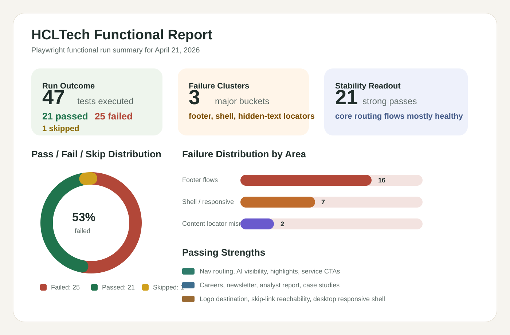

Run Snapshot
Tests executed47
Passed21
Failed25
Skipped1
Duration5.2m
This report summarizes the Playwright functional run for the HCLTech homepage. It captures the run outcome, stable passing areas, the major failure clusters, and the most likely causes based on the completed Firefox execution.

Representative navigation links, AI visibility, highlights, services, analyst reports, careers, newsletter, and case studies all passed in the live run.
Skip-link reachability, logo destination, contact routing, and the desktop responsive shell all passed, which gives us a good baseline to refine from.
Most footer tests failed in `beforeEach` while waiting for footer readiness. That points more strongly to footer helper assumptions or page-readiness timing than to many independent broken links.
The testimonial carousel and breadcrumb tests resolved to hidden elements instead of visible controls or labels, which is a classic sign that the locator strategy needs tightening.
The tablet/mobile shell, language switch, search, and hero tests timed out late and often ended with `Target page, context or browser has been closed`, which usually means the page was still busy or the expectations were too broad for the live DOM.
| Area | Representative tests | Observed outcome | Likely interpretation |
|---|---|---|---|
| Content flows | `FT-011` to `FT-017`, `FT-019` to `FT-021` | Mostly passed | Core business journeys and homepage CTA routing are in relatively good shape |
| Carousel / breadcrumb | `FT-018`, `FT-022` | Failed on hidden element matches | Locators are too broad and need visible-element targeting |
| Footer suite | `FT-023` to `FT-029` | Failed in `beforeEach` waiting for footer readiness | Strong signal of helper or readiness issues, not 16 separate product defects yet |
| Shell / responsive | `FT-001`, `FT-005`, `FT-007`, `FT-008`, `FT-009`, `FT-010` tablet/mobile | Timed out or closed late | Needs tighter page-state waits and narrower locator scopes |
Use the Playwright `test-results` directory for raw error contexts from this run. The functional suite files live under `../tests/functional`.